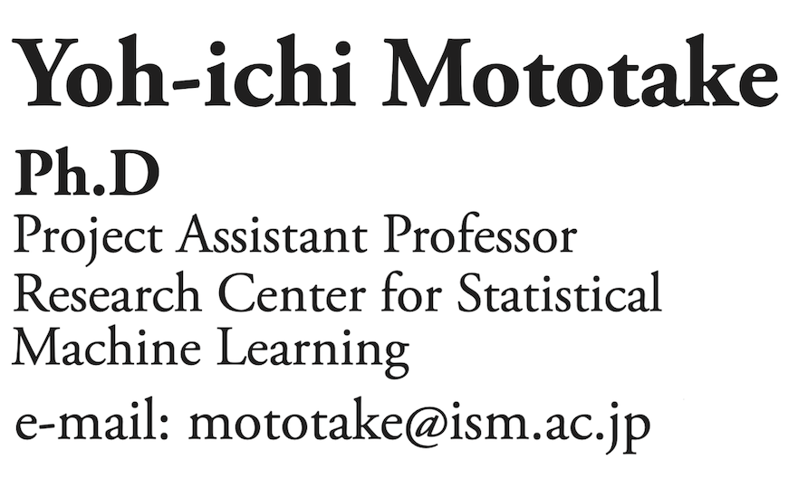
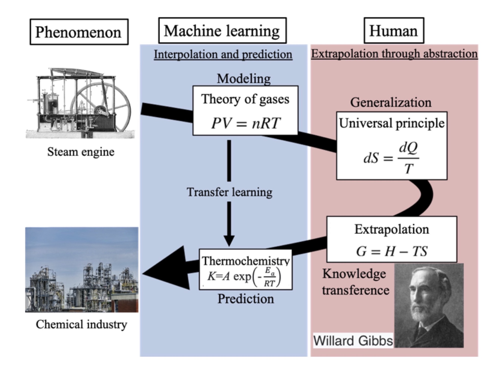
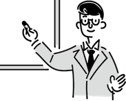
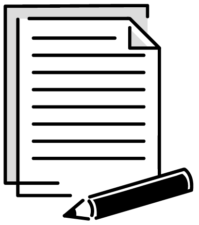

|

|
 |
NEWS
|  | 2022/9/7 | 【Talk】 | 28/9/2022 Meeting of Sakigake CREST 'Information Measurement' cluster meeting. |
|  | 2022/5/11 | 【preprint】 | Yoh-ichi Mototake, Kaita Ito, Masahiko Demura, “Quantitative Prediction of Fracture Toughness of Polymer by Fractography Using Deep Neural Networks”, arxiv:2204.13912. |
| 2022/4/27 | 【preprint】 | Yoh-ichi Mototake, Masaichiro Mizumaki, Kazue Kudo, Kenji Fukumizu, “Revealing the Mechanism of Magnetic Domain Formation by Topological Data Analysis,” arxiv:2204.12194. | |